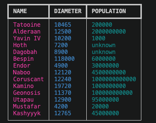

PYTHON FUNDAMENTALS
DESCRIPTION
- The
purposeof this exercise is to practice python programming ;) - This is
not a test: you can discuss solutions, issues with each other and the instructor. - PLEASE
do not to use AI tools for this exercise. - You will be required to
complete all items in the list belowin order to get full marks. - This exercise is
worth 5%of your grade WHO: Please workindividually- not two, not three ... not four.WHEN: All team members must before the beginning of next class (Monday Sept 28 2026 1:15 pm)THE DELIVERABLE: upload the COMPLETED python scripts to your github repository
and provide the url in the submission box of the CART 351 moodle page
EXERCISE I PART TWO A
#
# CART 351 EXERCISE ONE PART TWO A
#
# This exercise is also a Python program. Your task is to read the
# task descriptions below and then write one or more Python statements to
# carry out the tasks. There's a Python "print" statement before each
# task that will display the expected output for that task; you can use
# this to ensure that your statements are correct.
#
#------------------------------------------------------------------------
print("\n------")
print("Task 14: List indexes")
print("Expected output: alpha")
# Task 14: A variable "greek" is defined below. The value of this variable
# is of type list. Change the expression below the variable definition so
# that it prints "alpha" (instead of "beta").
greek = ["alpha", "beta", "gamma", "delta", "epsilon"]
print(greek[1])
#------------------------------------------------------------------------
print("\n------")
print("Task 15: List slices")
print("Expected output: ['beta', 'gamma', 'delta']")
# Task 15: Change the values of the variables "start" and "finish" below so that
# the print statement displays the second through fourth items in the list
# "greek" (defined above).
start = 0
finish = 6
print(greek[start:finish])
#------------------------------------------------------------------------
print("\n------")
print("Task 16: List slices, part 2")
print("Expected output: ['delta', 'epsilon']")
# Task 16: Change the value of the variable "foo" below so that the print
# statement displays the last two members of the list "greek" (defined above).
# Use a negative number for "foo".
foo = 0
print(greek[foo:])
#------------------------------------------------------------------------
print("\n------")
print("Task 17: List operations")
print("Expected output: True")
# Task 17: Change the value of the variable "letter_to_look_for' below so
# that the print statement displays "True."
vegetables= ["aubergines", "carrots", "turnips", "fiddleheads", "artichokes"]
word_to_look_for = "carret"
print(word_to_look_for in vegetables)
#------------------------------------------------------------------------
print("\n------")
print("Task 18: List operations, part 2")
print("Expected output: ['artichokes', 'aubergines', 'carrots', 'fiddleheads', 'turnips']")
# Task 18: Change the expression below so that the print statement displays
# the list "vegetables" (defined above) in alphabetical order. (Use the "sort"
# function.
print(vegetables)
#------------------------------------------------------------------------
print("\n------")
print("Task 19: Modifying lists")
print("Expected output: ['artichokes', 'aubergines', 'carrots', 'fiddleheads', 'turnips','radishes']")
# Task 19: Write a Python statement that adds a new item, "radishes", to the
# list "vegetables" (defined above). The print statement should display the updated
# list.
# write your statement here
print(vegetables)
#------------------------------------------------------------------------
print("\n------")
print("Task 20: Loops")
print("Expected output:")
print(" artichokes")
print(" aubergines")
print(" carrots")
print(" fiddleheads")
print(" turnips")
print(" radishes")
# Task 20: Write a "for" loop below that prints out each item in the list
# "vegetables" (defined above). (The list should contain the item that you
# added to the list in task 17.)
#------------------------------------------------------------------------
print("\n------")
print("Task 21: Loops, part 2")
print("Expected output:")
print(" Artichokes")
print(" Aubergines")
print(" Carrots")
print(" Fiddleheads")
print(" Turnips")
print(" Radishes")
# Task 21: Write a "for" loop below that prints out each item in the list
# "vegetables" (defined above), but with the first letter of each item capitalized.
# (The list should contain the item that you added to the list in task 17.)
#------------------------------------------------------------------------
print("\n------")
print("Task 22: Split and join")
print("Expected output:")
print(" 25")
print(" 9-18-25")
# Task 22: Modify the variable "separator" below so that the first print
# statement displays "25". Modify the variable "glue" so that the second print
# statement displays "9-18-25".
separator = "?"
glue = "?"
parts = "9/18/25".split(separator)
print(parts[-1])
print(glue.join(parts))
#------------------------------------------------------------------------
print("\n------")
print("Task 23: All together now")
print("Expected output: alpha, beta, gamma, delta, epsilon, zeta, eta, theta")
# Task 23: Make three changes on the Python code below, as follows: (1) replace
# [] with an expression that evaluates to a list with two items, "eta" and
# "theta" (using the .split() method). (2) Replace the word "pass" with a
# Python statement, so that the "for" loop has the effect of adding two new
# items to the list "greek" - recall it was defined above - but we redefine it below:).
# (Use the .append() method.) (3) Change the value
# of the variable "glue" so that the desired output is displayed.
greek = ["alpha", "beta", "gamma", "delta", "epsilon","zeta"]
new_letters = "eta theta"
new_letters_list = [] # <-- replace this
for letter_name in new_letters_list:
pass # <-- and replace this
glue = "?" # <-- and replace this
print(glue.join(greek))
EXERCISE I PART TWO B
Doing a bit of exploration with the STAR WARS API :)
- Start with a new python script: and using the
requestspackage, access the planet names, their diameter and populations. - Then ... explore and install the RICH API in order to be able to output the following in your
terminal/powershell/cmd Prompt window:)